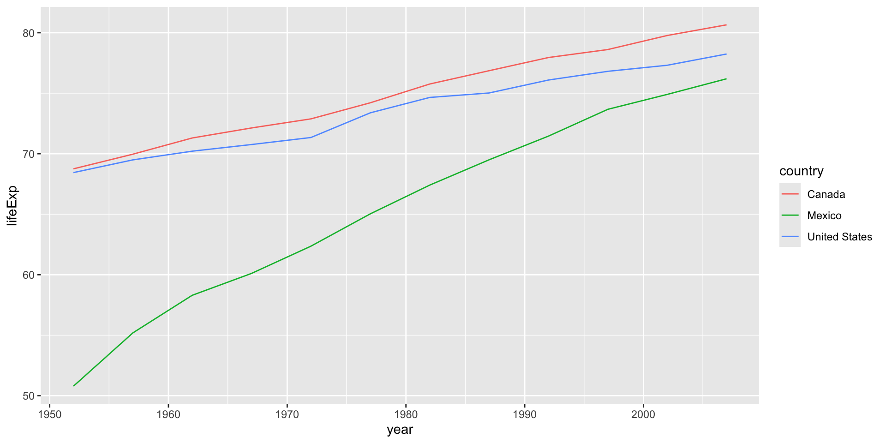
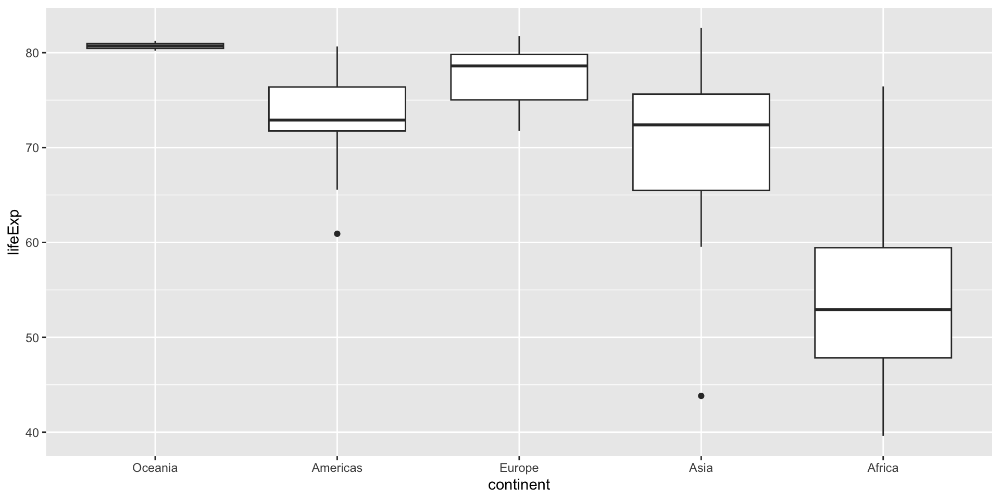
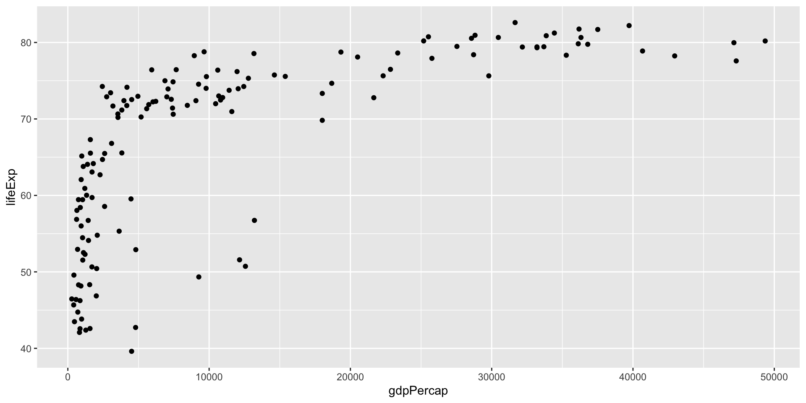
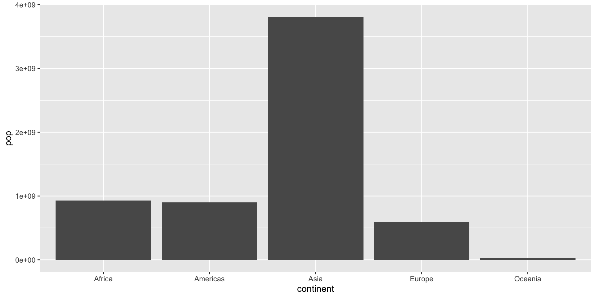
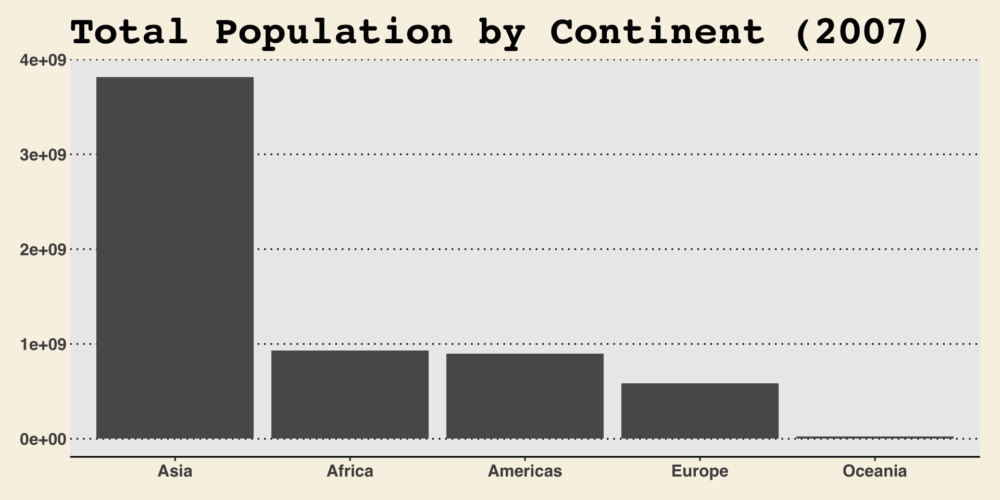
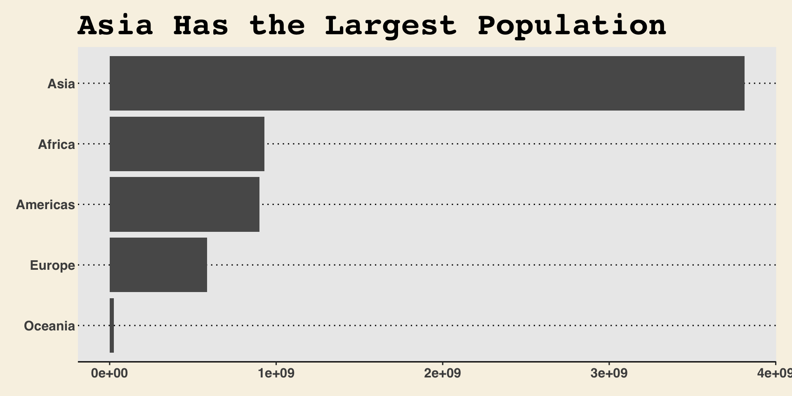
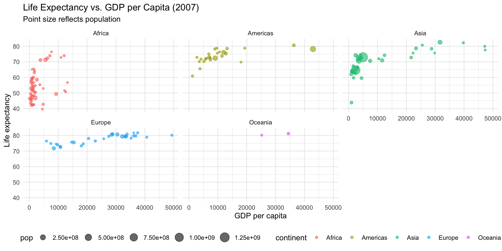
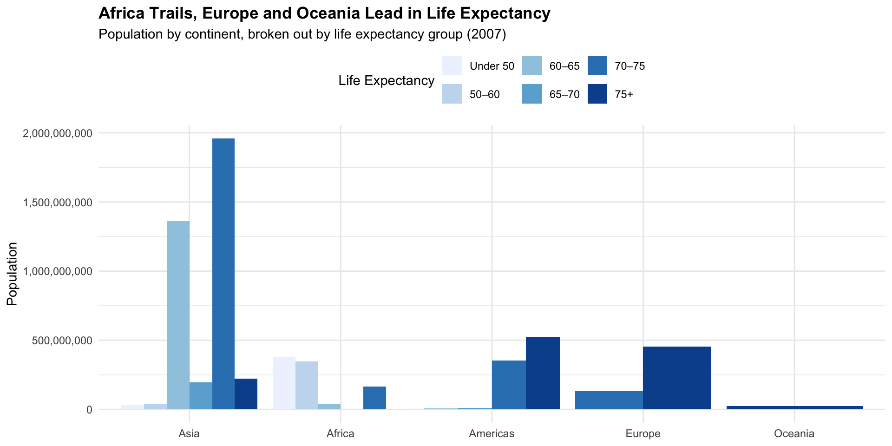

Session 5 · MLDS Bootcamp · Fall 2026
ggplot structureggplot()geom_point(), geom_col(), geom_line(), etc.aes()+ggplot expects long data: one row per observation, one column per variable
tidyr: pivot_longer() reshapes wide data into long data# A tibble: 10 × 6
country year pop continent lifeExp gdpPercap
<chr> <dbl> <dbl> <chr> <dbl> <dbl>
1 Afghanistan 1952 8425333 Asia 28.8 779.
2 Afghanistan 1957 9240934 Asia 30.3 821.
3 Afghanistan 1962 10267083 Asia 32.0 853.
4 Afghanistan 1967 11537966 Asia 34.0 836.
5 Afghanistan 1972 13079460 Asia 36.1 740.
6 Afghanistan 1977 14880372 Asia 38.4 786.
7 Afghanistan 1982 12881816 Asia 39.9 978.
8 Afghanistan 1987 13867957 Asia 40.8 852.
9 Afghanistan 1992 16317921 Asia 41.7 649.
10 Afghanistan 1997 22227415 Asia 41.8 635.
ggplot uses factor levels to decide legend order, axis order, etc.
Figure out how to create your plot using ggplot syntax

continenttheme_minimal())dplyr skills matter mostgapminder07, calculate total population (pop) by continentFigure out how to create your plot using ggplot syntax



With a partner, try to understand what’s happening in this code
ggplot(gapminder07) +
geom_point(aes(x = gdpPercap, y = lifeExp, size = pop,
col = continent), alpha = 0.6) +
facet_wrap(~continent) +
labs(
title = "Life Expectancy vs. GDP per Capita (2007)",
subtitle = "Point size reflects population",
x = "GDP per capita", y = "Life expectancy"
) +
theme_minimal() +
theme(legend.position = "bottom")
size= — mapped population to point sizealpha= — added transparencyfacet_wrap() — split into one panel per continentlabs() — added a subtitletheme() — moved the legendWith a partner, try to understand what’s happening in this code
gapminder07_grouped <- gapminder07 |>
mutate(life_exp_bracket = case_when(
lifeExp < 50 ~ "Under 50",
lifeExp < 60 ~ "50–60",
lifeExp < 65 ~ "60–65",
lifeExp < 70 ~ "65–70",
lifeExp < 75 ~ "70–75",
TRUE ~ "75+"
)) |>
mutate(life_exp_bracket = factor(life_exp_bracket,
levels = c("Under 50", "50–60", "60–65", "65–70", "70–75", "75+"))) |>
group_by(continent, life_exp_bracket) |>
summarize(pop = sum(pop))
head(gapminder07_grouped, 3)# A tibble: 3 × 3
# Groups: continent [1]
continent life_exp_bracket pop
<chr> <fct> <dbl>
1 Africa Under 50 376100713
2 Africa 50–60 348400562
3 Africa 60–65 38410896With a partner, try to understand what’s happening in this code
gapminder07_grouped |>
ggplot(aes(x = reorder(continent, -pop, sum), y = pop, fill = life_exp_bracket)) +
geom_col(position = "dodge") +
scale_y_continuous(labels = scales::label_comma()) +
scale_fill_brewer(palette = "Blues") +
labs(
title = "Africa Trails, Europe and Oceania Lead in Life Expectancy",
subtitle = "Population by continent, broken out by life expectancy group (2007)",
x = NULL, y = "Population", fill = "Life Expectancy"
) +
theme_minimal() +
theme(legend.position = "top", plot.title = element_text(face = "bold"))
fill = — assigned a bar to each life expectancy group within a continentscales::label_comma() — adds comma separators to y-axis numbersposition = "dodge" — this is what makes it a grouped (clustered) bar chart — bars sit side by side instead of stackingscale_fill_brewer() — swapped in a color palettetheme — moved location of legend and bolded title.R — a plain script.Rmd — code + text (we’ve been using a .qmd file all along!).Rproj — the project file.csv — raw / processed data.html / .pdf — rendered output.RDS — a single saved R object (vs. .RData, which saves your whole environment)snake_case is the R convention — not camelCasex <- 5, not x<-5).gitignore — set up before your first commit to avoid hidden files